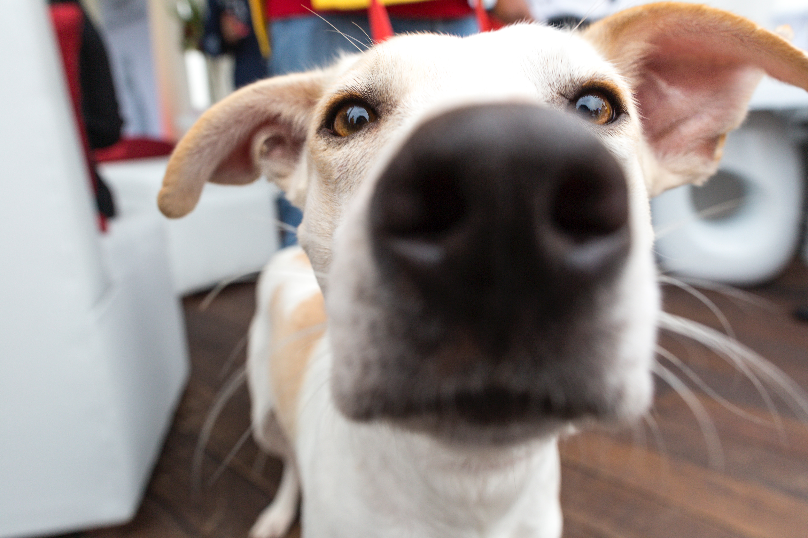

Adoção de animais: Uma escolha amorosa de um pet feliz.


Olá amigos humanos! Eu sou um pet feliz e gostaria de falar com vocês sobre adoção de animais. Como um animal de estimação que foi adotado, eu posso garantir que a escolha de adotar um animal é uma das melhores decisões que você pode tomar. Não só você ganha um amigo fiel e amoroso, mas também está fazendo uma escolha ética e responsável.
Quando você decide adotar um animal, está dando a ele uma segunda chance na vida. Muitos animais em abrigos foram abandonados ou encontrados nas ruas, e eles precisam de um lar amoroso para chamarem de seu. Ao adotar um animal, você está dando a ele um novo começo e a chance de ser amado e cuidado.
Além disso, adotar um animal pode mudar sua vida também. Eles trazem alegria e amor para sua casa e tornam cada dia um pouco mais brilhante. Eles são excelentes companheiros e vão estar ao seu lado em todos os momentos. Você nunca mais vai se sentir sozinho com um pet amoroso em casa.
Quando você adota um animal, está fazendo uma escolha ética e responsável. Você está ajudando a diminuir o número de animais abandonados nas ruas e em abrigos. Também está dando um exemplo para outras pessoas seguirem. Você pode inspirar amigos e familiares a adotarem animais também.
Em resumo, adotar um animal é uma escolha amorosa e responsável. Você está salvando a vida de um animal e ganhando um amigo fiel em troca. Não há nada mais gratificante do que saber que você fez a diferença na vida de um animal necessitado. Então, se você está pensando em adotar um pet, vá em frente! Você não vai se arrepender.
E se você está procurando um animal para adotar, quero apresentar o Adopets. Eles são um site que divulga gratuitamente animais que estão disponíveis para adoção em todo o Brasil. Você pode procurar por cães, gatos e outros animais em sua região e encontrar seu novo melhor amigo. E o melhor de tudo, a divulgação dos animais no Adopets é totalmente gratuita.
Se você é um abrigo, uma ONG ou simplesmente um protetor de animais que quer ajudar a divulgar os animais que precisam de um lar, o Adopets pode ajudá-lo. Basta enviar um e-mail para devnoleto@gmail.com e informar sobre o animal que você deseja divulgar. O Adopets vai publicar as informações em seu site gratuitamente e ajudar a encontrar um lar amoroso para o animal.